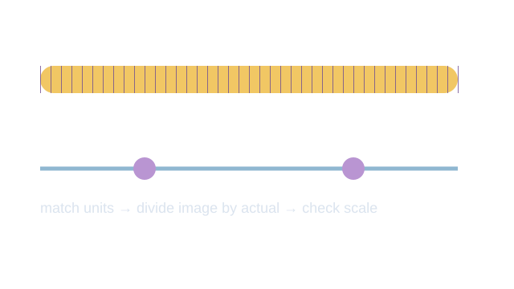
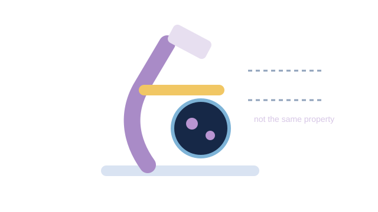

LAUNCH Science · W3L2 · lesson resources
Choose the relationship
Choose one shared task or resource within the current lesson stage. Keep the lesson’s 40-minute timetable and 15-minute independent work.
We Do · Choose the relationship
Work in pairs: one chooses the formula; one checks the units. Swap.
- A Image 20 mm; actual 0.1 mm. Find M.
- B Image 50 mm; actual 0.5 mm. Find M.
- C M = ×400; actual 0.05 mm. Find image size.
Discuss, point, write or dictate your first reason. Use one example first; extend only if there is time.
Reveal shared reasoning after an attempt
A: 20 ÷ 0.1 = ×200.
B: 50 ÷ 0.5 = ×100.
C: 400 × 0.05 = 20 mm.
Keep units for lengths; magnification is a ratio.
This page keeps your writing while it stays open. It does not save or send it.
Model explanation and diagram

Name the unknown, match the units, select the relationship, substitute, then check. Magnification is a ratio: write ×200, not 200 mm.
Watch for: 50 µm is 0.05 mm, not 50 mm. A correct final value is not evidence that the unit route was understood.
Give a smaller support cue
1. Name the missing value. 2. Match the units. 3. Choose M = I ÷ A, I = M × A or A = I ÷ M. 4. Show each line of working.
Optional video · Microscopy
Watch for: What is the difference between making an image bigger and resolving more detail?
Use a short relevant extract within I Do, then pause for an explanation. The clip replaces part of the modelling time.
Open the freesciencelessons video in a new tab
No-video version · use the same question

Magnification compares image size with actual size. Resolution is the ability to distinguish two close points as separate. Increasing size alone does not reveal more detail.
Internet is needed for the optional clip. It is concept teaching; viewing it is not completion of a practical.